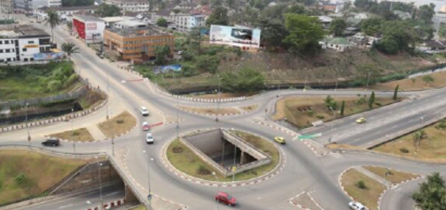

Après avoir réussi à stabiliser les comptes de la communauté Urbaine de Douala, l’économiste a mis sur orbite la capitale économique pour la reconquête de sa compétitivité et son attractivité. Le magistrat municipal a également engagé une politique de proximité avec les mairies d’arrondissement, les communeautés et les chefferies traditionnelles.Par ailleurs, plusieurs chantiers sont en cours de réalisation pour l’amélioration du cadre de vie des populations de la cité balnéaire, Douala.
j’ ai présidé vendredi 29 Juillet 2022 la séance plénière de la session ordinaire du conseil de la communauté de la ville de Douala, pour le compte du 2e trimestre consacrée à l’évaluation de l’exécution du budget de la ville au 30 juin 2022.Bien qu’en rencontrant certaines difficultés, je me réjouis du fait que le niveau des engagements budgétaires du premier semestre marque une amélioration par rapport à la performance du premier semestre de l’ exercice précédent 2021.En effet, de façon concrète, le conseil de communauté de la ville de Douala a réalisé des engagements budgétaires à hauteur de 22,2% des crédits au 30 juin 2022, contre 11,29% au 30 juin 2021.Les différents chantiers initiés permettront aux citoyens de la ville et même aux visiteurs de circuler en toute quiétude et dans la ville de Douala ».Ainsi s’ exprimait le Dr. Roger Mbassa Ndine, le maire de Douala, au terme de la session ordinaire du Conseil de la communauté urbaine de Douala (CUD), consacré a l’évaluation à mi-parcours du budget 2022.
Au premier semestre de l’exercice en cours, la Communauté urbaine de Douala affiche en effet une hausse de ses résultats, de l’ordre de 10%.La bonne tenue des comptes de cette institution est caractéristique de la nouvelle dynamique impulsée par le Dr Mbassa Ndine , depuis son élection comme maire de Douala , le 4 mars 2020.Celle de la bonne gouvernance , le redressement de la trésorerie , l’ assainissement des moeurs au sein de la CUD, le renforcement du cadre de collaboration avec les mairies d’Arrondissement, le rapprochement avec les communautés et les chefferies traditionnelles , ou l’ amélioration des infrastructures de base et le cadre de vie des populations .Pour atteindre ses objectifs , le maire de Douala a centralisé son action autour de 4 programmes : Offres de services Sociaux de base, Promotion du développement économique et protection de l’environnement , et promotion de la citoyenneté , la culture, le sport et l’ appui a la jeunesse , Gouvernance et administration locale.
Après un peu plus de deux an de magistrature municipale, le Dr Roger Mbassa Ndine peut se prévaloir d’un bilan positif sur plusieurs aspects ce, malgré la conjoncture locale, nationale et internationale: stabilisation des comptes de la Cud , rétablissement de la crédibilité de la signature de la Cud,amélioration de la voirie urbaine, réhabilitation et optimisation de l’éclairage public,amélioration du drainage urbain, restructuration de la Cud etc.Quelques faits marquants peuvent aisément soutenir les bons points engrangés par le Maire de Douala.Sur le plan de la gouvernance et de la gestion , le maire de Douala a brillamment mis à jour et stabilisé les cotisations de la Cud a l’endroit de la CNPS (caisse nationale de prévoyance sociale), ramener un climat social serein avec le réhabilitation des délégués du personnel créer une cellule de lutte contre la corruption, ou encore restructurer la réglementation locale sur la publicité etc. Dans le cadre de l’ amélioration des conditions de vie des populations, l’ attractivité de la ville de Douala et son développement le Maire de Douala a relancé le projet Sawa beach par la signature.
Le 4 mai 2022, avec le port autonome de Douala , de 3 conventions marquant le lancement de la phase I de ce projet.Le 4 juin 2021, la Cud a reçu de Uba Cameroon une enveloppe 3.2 milliard de FCFA pour la réalisation du projet de développement des villes inclusives et résilientes dans la ville de Douala (Pdvir).Dans le même sillage , la même banque s’apprête à accorder une enveloppe de 7 milliards de FCFA à la Cud, pour la dotation en engins lourds et légers, la régie autonome des grands travaux , nouvelle entité créée au sein de la Cud.Une révolution dans la capitale économique.Autre révolution, c’est le projet «Métrobus» (Bus Rapid Transit). Projet de mobilité urbaine soutenable de construction d’ une ligne de transport rapide de bus sur 28.2 km,dans la ville de Douala.A cette effet, et par la capacité de négociation du Maire de Douala , ainsi que ses performances sur le plan financier, la Banque Mondiale a approuvé un financement de 281 milliards de FCFA au profit de la Cud.C’ était le 2 juin 2022.
Autre bonne nouvelle, c’est le lancement annoncé d’ un programme d’ émissions de titres de créances négociables en vue de lever un montant de 150 milliards de FCFA , afin de financer certains grands projets.Au regard de ces actions non-exhaustives beaucoup reste à réaliser. Toutefois , le Dr Mbassa Ndine,deux ans environ de la fin de son mandat, entend mettre un coup d’accélérateur sur tous les aspects de son programme d’ actions : constructions des équipements marchands, sécurisation de la voirie urbaine et de sa mobilité urbaine, promotion du développement durable et de l’ emploi jeune etc.
Source: Afrique Libre Magazine